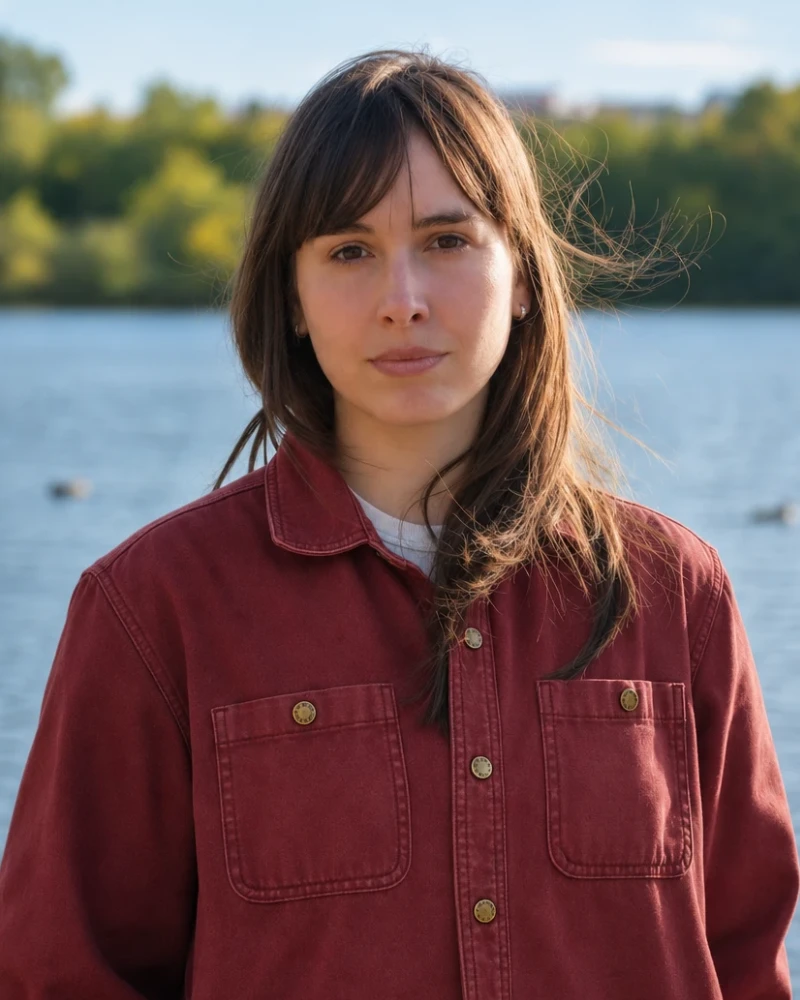
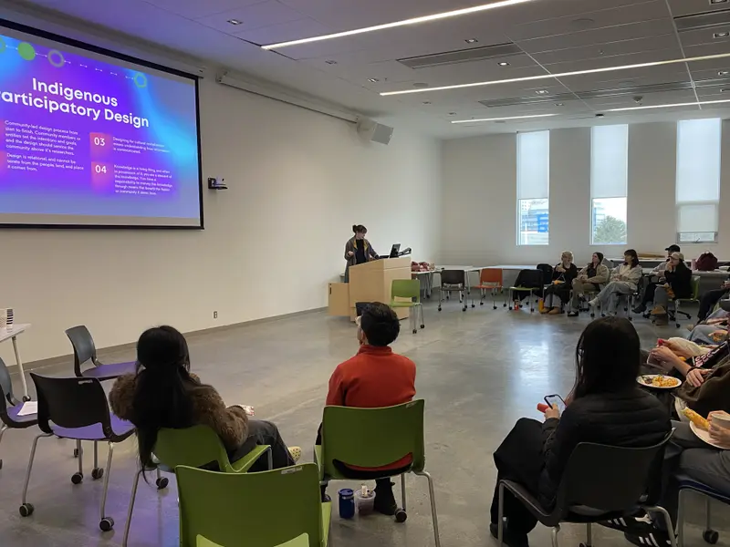

About

Julie McIntosh is an award-winning interdisciplinary designer and storyteller working across participatory design, conceptual design and multimedia storytelling. She designs in relation to real places, people and systems.
Her Master of Design thesis, Playful Knowings, is a rigorous case study in community-led design: multi-season fieldwork, interviews with Elders and community members, and participatory workshops that invited people to redesign everyday objects around their own sense of joy. The research defined six characteristics for a community gathering place and culminated in conceptual drawings for âniskômohcikewin.
That project anchors a practice with real range: an embodied storyboarding workshop for animators built on puppetry, dance and improvisation, a prototyped choose-your-own-adventure storytelling app for children, short films, and a performance background in improv and tabletop RPGs.
She currently works in knowledge mobilization for data governance, turning complex research into work people can use, and brings the same participatory, community-led methods to her film and design research.
Her practice is methodical and intentional, grounded in the teachings of the communities, collectives and organizations she works with, and holds deep roots in her Northern Franco-Ontarian, Québécois family. She is a member of her Cree community in Manitoba.
How she works
Designing with people
She stays close to real contexts and adapts as projects evolve.
Approachability
She aims to be easy to work with and attentive to how collaboration feels, especially in community settings.
Careful process
Clear process, care and follow-through, with room for outcomes to take shape.
Respect for agency
Participation is always invitational, with multiple ways to engage at different comfort levels.
Bridging worlds
Between research and making, seriousness and play, history and possibility, translating between them with care.
Leading with care
She leads through listening and presence.

Workshops, talks and classrooms
Julie speaks and facilitates on participatory and community-led design, embodied storytelling and placemaking. She creates rooms where people can try something together.
Exhibitions, residencies and programs
Selected exhibitions
- Playful Knowings, âniskômohcikewin, Libby Leshgold Gallery, Vancouver (2025)
- Coming Home, Libby Leshgold Gallery, Vancouver (2023)
Residencies and programs
- Banff Moonlighters film program, participant (2026)
- Mila Indigenous Pathfinders in AI program, participant (2026)
- Artist residency, Bareneed Artist Studio, Newfoundland (May 2024)
Education
- Master of Interdisciplinary Design, Emily Carr University of Art + Design
- Aboriginal Visual Arts, New Brunswick College of Craft and Design
- B.A. Political Science, University of Victoria
Awards
- Creative Catalyst Fellowship, Emily Carr University of Art + Design (2024)
- Entrance Scholarship, Emily Carr University of Art + Design (2022)
- Best Sport Story, Quebec Community Newspapers Association, for The Nation (2020)
Publication
- Prince, McIntosh, Maniapoto, Noe, Loban, Hester and Barcham, “AI and Indigenous lifeworlds: Rethinking how we might be able to create systems of Artificial Intelligence that nourish and support Indigenous lifeworlds through participatory design”, Adjunct Proceedings of NordiCHI 2026, ACM (2026)